Redesigning AI-powered document workflows — conversion optimization, skeleton loaders, and analytics-driven iteration that turned free users into paying customers.
Discover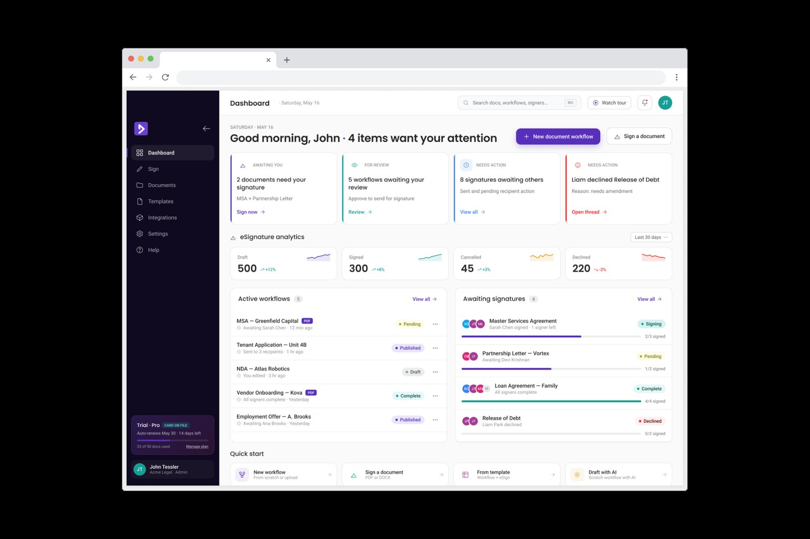
Doxflowy had a powerful AI document automation platform — but was bleeding potential revenue. Thousands of users were arriving from search, downloading free signature and document templates, and leaving without ever signing up, exploring the tool, or paying. Microsoft Clarity data revealed widespread frustration: rage taps at 0.48%, dead clicks at 15.70%, and users abandoning mid-flow because loading states gave no visual feedback — they couldn't tell if the app was responding.
The marketing site wasn't converting because it led with features instead of user pain points. Template download pages had no email capture or follow-up mechanism. And inside the web app itself, complex conditional-logic workflows and calculation tags — core product differentiators — were buried behind unintuitive interfaces that frustrated non-technical users.
I worked directly with founders, engineers, and product stakeholders in daily agile standups, owning design end-to-end across the web application, marketing site, and e-signature tool. I set up and ran monthly Microsoft Clarity analytics — heatmaps, session recordings, rage taps, dead clicks — translating behavioral data into actionable design iterations each sprint. I presented monthly slides with analytics findings and design recommendations to the leadership team.
I advocated for the user at every design stage, balancing aesthetics with usability across wireframes, prototypes, and high-fidelity mockups delivered to engineering. Every design decision had to serve two masters: user experience and business conversion.
I designed the end-to-end interface for Doxflowy's AI document assistant — prompt input, inline AI suggestions, formatting controls, and a contextual tag system. The previous approach required users to manually tag every field in a document template, a tedious process that took hours for complex contracts. The AI-powered approach automates field detection and tagging, cutting setup time for new users from hours to minutes while maintaining the precision that legal documents demand.
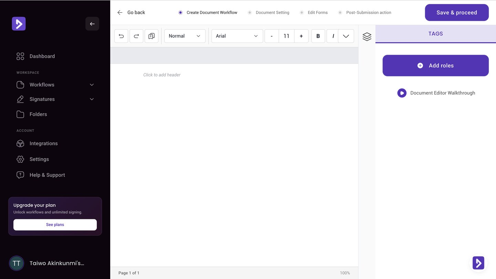
The dashboard needed to surface everything a user cares about at a glance: pending signatures, active workflows, document status, and getting started guidance. I designed a layout that balances information density with clarity — walkthrough video for new users, action items requiring attention, and at-a-glance analytics across documents, workflows, signatures, and folders. The dark and light theme options give users control over their workspace aesthetic.
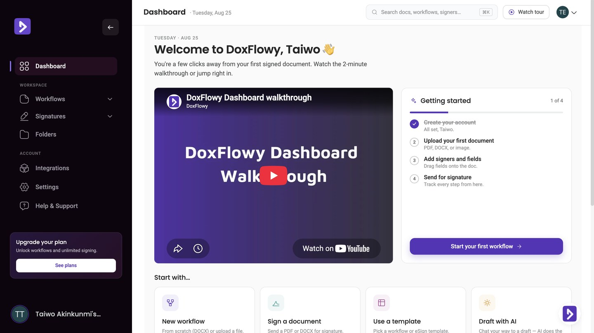
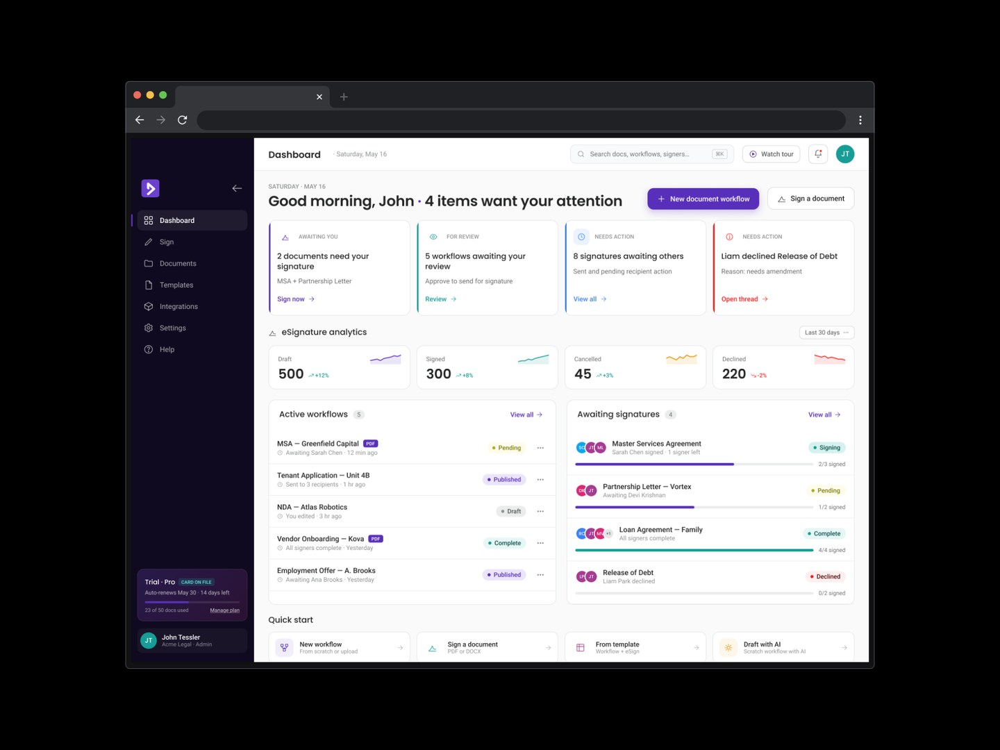
Doxflowy's conditional-logic workflows and calculation tags are core differentiators — they allow non-technical users to create dynamic contracts where clauses appear or disappear based on form responses, and where values like totals, dates, and quantities calculate automatically. I redesigned the tag creation interface to make complex logic accessible: clear role assignment, visual tag previews, and a calculation builder with input selectors and unit controls that eliminates manual computation errors.
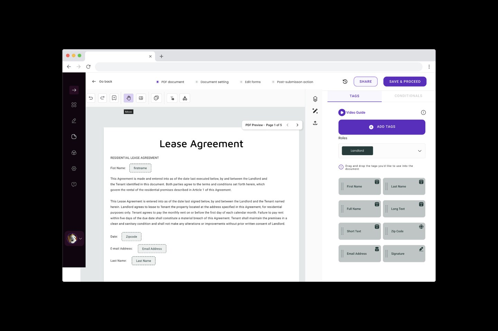
I selected and integrated Storyset illustrations across the marketing site and web app to communicate complex product concepts visually — document security, workflow compliance, and collaborative signing. These illustrations maintain Doxflowy's purple brand palette and add warmth to what could otherwise feel like a dry B2B SaaS experience.
Experience the document automation platform I designed — explore the marketing site, signature tool, and web app interface live.
Visit doxflowy.com →One of the biggest sources of frustration was invisible loading. When users clicked into signature workflows or document editors, the screen went blank while content loaded — giving no indication that the app was responding. Users responded by tapping repeatedly, driving up rage taps and creating the impression of a broken product. I designed skeleton loaders and contextual loading states that show structural previews of incoming content, giving users immediate visual confirmation that their action registered. This single intervention significantly reduced rage taps and dead clicks across the platform.
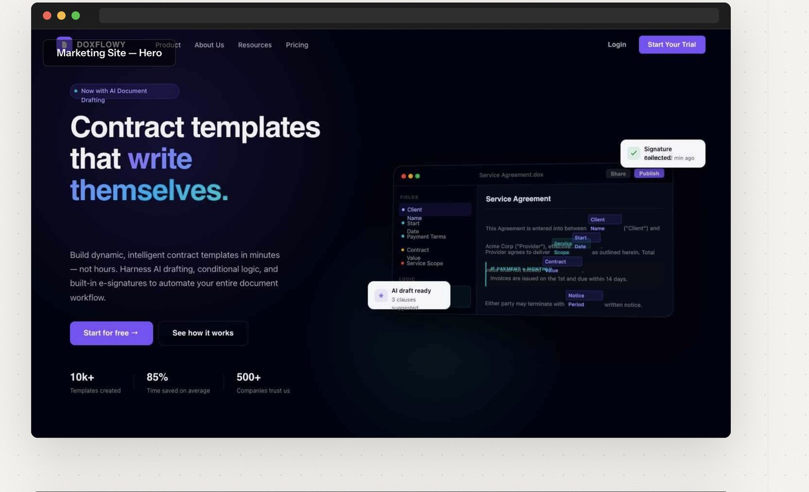
Doxflowy's built-in e-signature tool (UsefulSign) needed to feel like a standalone product, not an afterthought. I redesigned the signature creation interface with typed, drawn, and uploaded signature options, plus a smart email capture bar that converts anonymous template downloaders into signed-up users. The signature field editor supports advanced fields — name, email, company, address, checkboxes — giving users a full signing experience without leaving the platform. I also designed the integrations hub connecting Doxflowy with Google Drive, Dropbox, Box, Zapier, and Adobe Acrobat Sign.
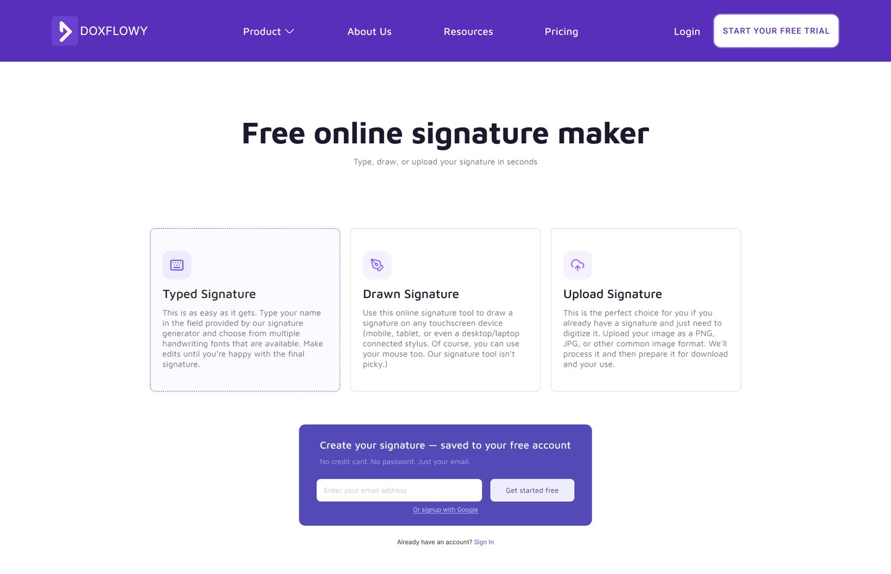
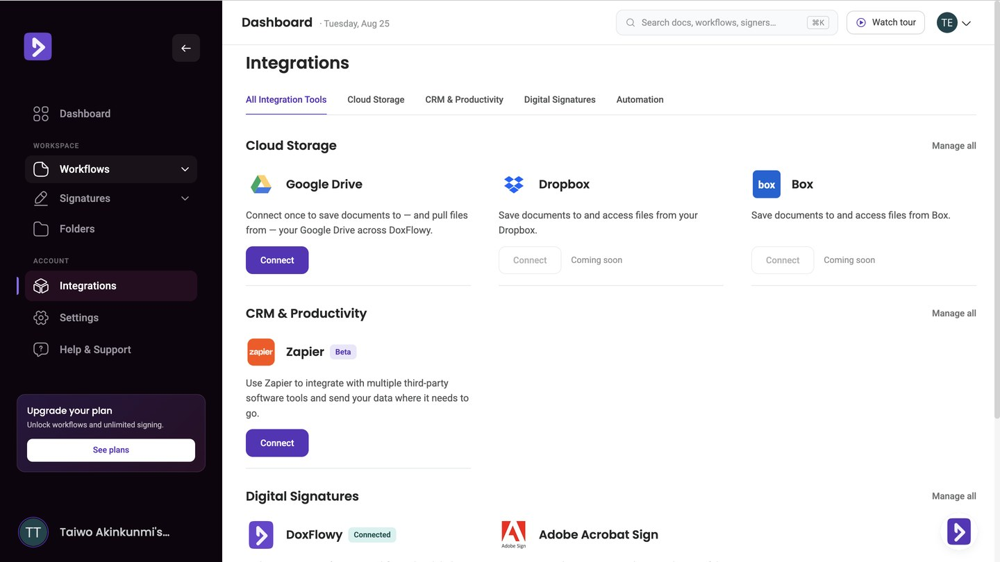
The original marketing site listed features without connecting them to user problems. I rewrote and redesigned the site to lead with pain-point-driven messaging: "Contract templates that write themselves" immediately tells users what they get, not what the software does. I introduced animated interactions, product demo sections, and a conversion-optimized layout with strategic CTAs. The template download pages were redesigned with email capture gates — collecting emails before downloads and triggering follow-up sequences for interested leads. Post-launch Clarity data confirmed the improvements across all key engagement metrics.
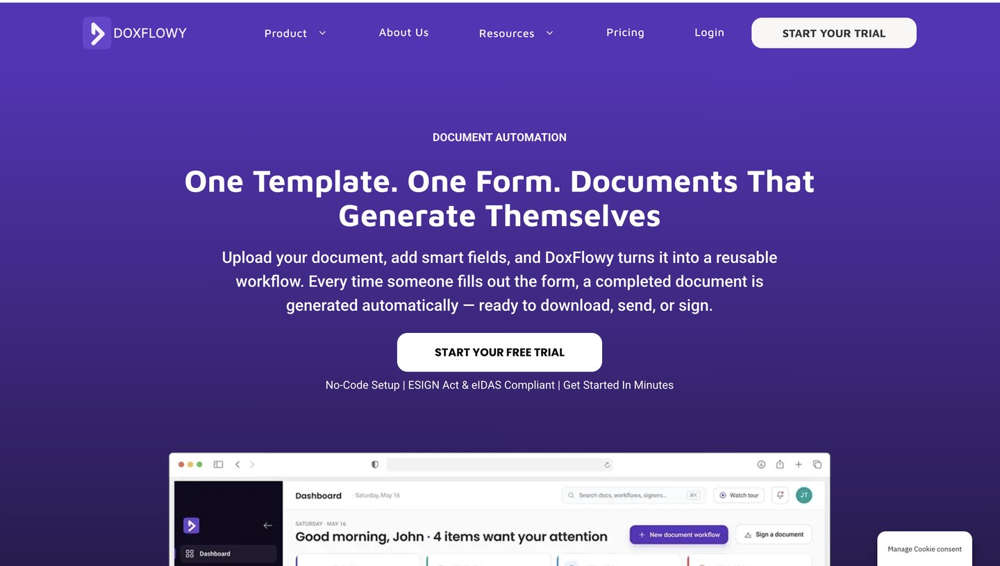
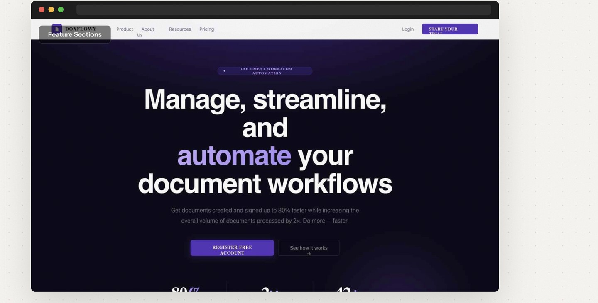
Every design decision was validated through Microsoft Clarity behavioral data. I ran monthly analytics reviews — heatmaps, session recordings, rage tap maps, dead click analysis — and translated findings into prioritized design sprints. The skeleton loader intervention alone significantly reduced user frustration metrics. Template download page redesigns with email capture increased sign-up conversion. The data told the story; the design followed.
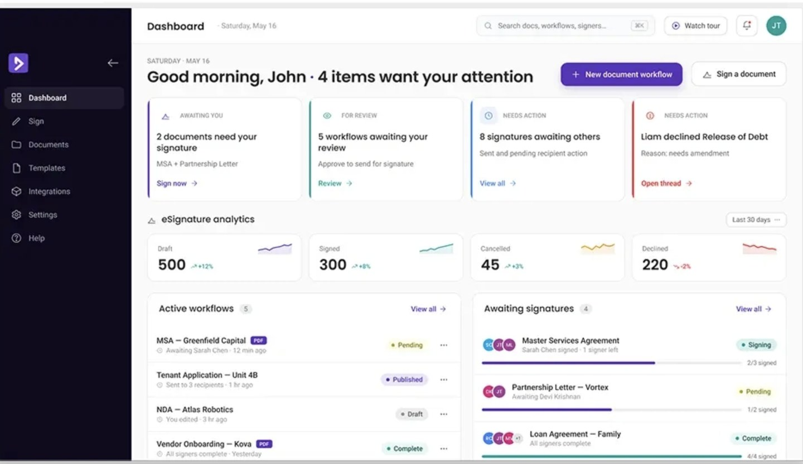
Four design decisions shaped the Doxflowy redesign. Each one was a direct response to behavioral data — not assumptions.
Designed contextual loading states for every async interaction — document loading, signature rendering, workflow processing. Users see structural previews instead of blank screens, eliminating the "is it broken?" moment that drove rage taps.
Redesigned template download pages to collect email before serving the file. Users still get their template instantly, but now the business has a lead to nurture. Follow-up email sequences converted a meaningful percentage of downloaders into trial users.
Rewrote the marketing site to lead with user problems instead of feature lists. "Contract templates that write themselves" tells users what they get. Product demo sections show the tool in action rather than describing it in abstract.
Replaced manual document tagging with AI-powered field detection. The previous approach required users to individually mark every variable in a contract — the new system suggests tags intelligently, cutting setup time from hours to minutes.
Doxflowy's design language centres on their signature purple (#6C5CE7) with a clean, professional SaaS aesthetic. I maintained and extended the component library across the web app and marketing site — buttons, form inputs, cards, modals, navigation patterns, tag selectors, and the sidebar system. The dark theme variant uses the same components with inverted colour tokens, ensuring visual consistency across both modes. Typography pairs a system sans-serif for UI density with intentional spacing for the document editor where readability at length is paramount.
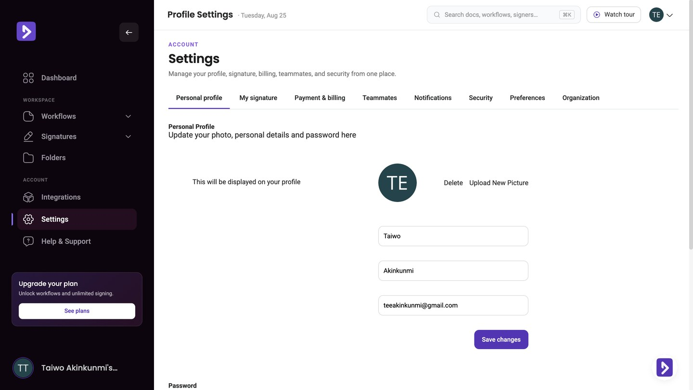
The combined impact of skeleton loaders, conversion-optimized template pages, pain-point-driven marketing copy, and AI-powered document tagging transformed Doxflowy's user engagement and business metrics. Rage taps dropped 31%, dead clicks reduced 5%, and the email capture strategy turned anonymous template downloaders into a growing pipeline of signed-up users.
Engineering velocity improved as the maintained design system reduced implementation ambiguity. Monthly Clarity analytics reviews kept design decisions grounded in real user behavior rather than assumptions, creating a culture of data-informed iteration that continued beyond my tenure.
Currently open to senior product design roles — fintech, AI-native products, or complex digital systems. Remote or relocation.
Get in touch